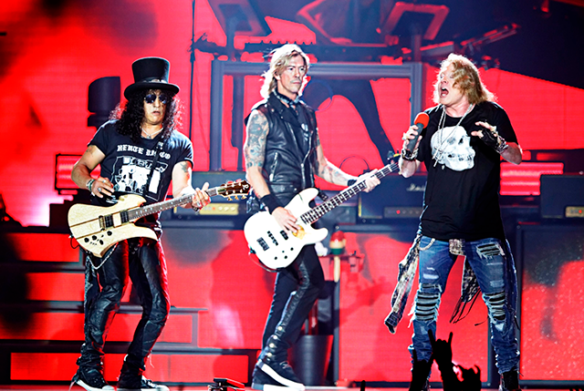
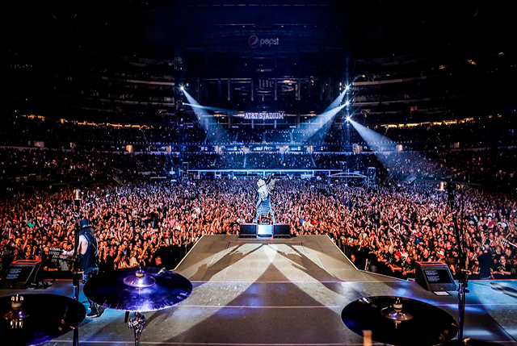
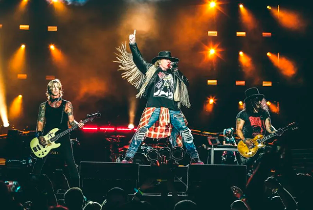
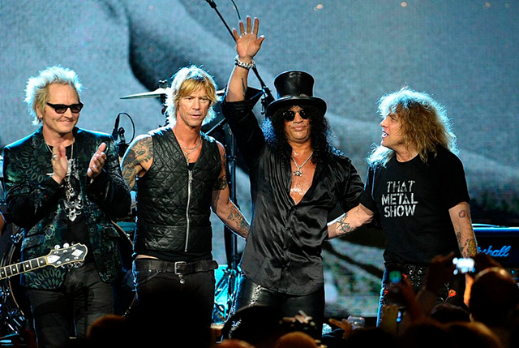
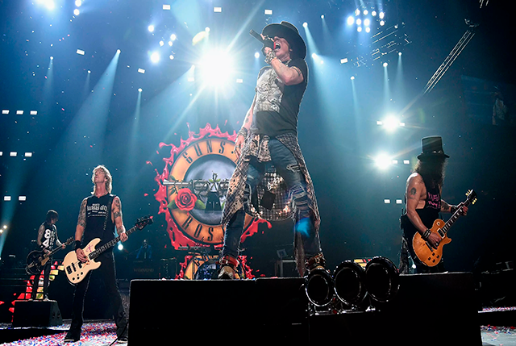
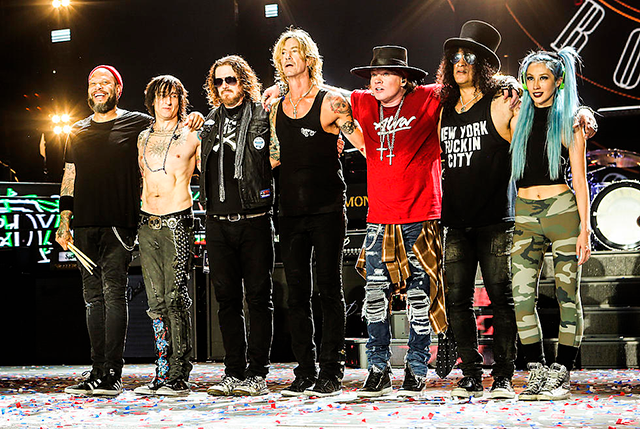
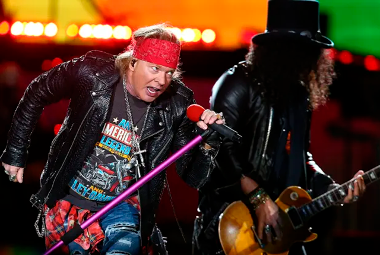
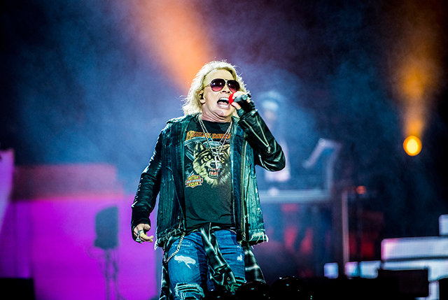

Uma Historia Guns N' Roses
Uma Historia Guns N' Roses 
Ultima e atual formação do Guns n Roses, Slash e Duff voltaram para a banda e junto deles a nova integrante Melissa Reese, Frank, Fortus e Dizzy se tornaram fixos desde que entraram e nunca mais sairam da banda, salvo quando Steven Adler ou Izzy Strandlin fizeram participações especiais, mas novamente nunca voltaram para a banda de maneira fixa.
Desde que a banda retornou com Slash e Duff, apenas duas musicas novas foram lançadas, sendo elas, Absurd (antiga SilkWorms) e Hard Skool (antiga Jackie Chan), não são completamente novas afinal são musicas gravadas na epoca do Chinese Democracy porem tanto as linhas de guitarras quanto as de baixo, foram todas regravadas para que assim Slash e Duff tenham sua parcela nas musicas novas.



